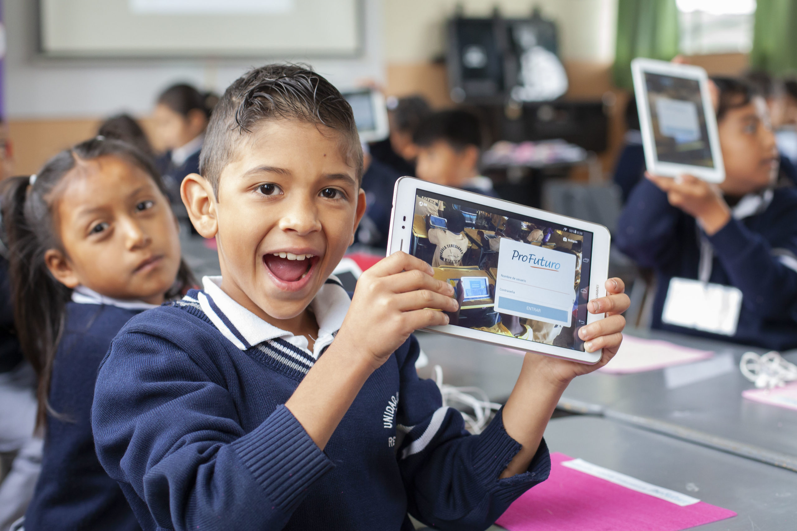

NUESTROS PROYECTOS
Cada proyecto nace a partir de las necesidades reales de las comunidades, combinando educación, inclusión y acompañamiento social.
PROGRAMA DESTACADO
Nuestro programa principal de alfabetización para jóvenes y adultos en situación de vulnerabilidad.
Más de 8.000 personas participaron de talleres, acompañamiento escolar y espacios de aprendizaje.
Quiero colaborar Conocer más
PROGRAMAS
Alfabetización digital y formación tecnológica para adultos.
Tutorías y apoyo educativo para jóvenes que retomaron sus estudios.
Espacios de aprendizaje y lectura compartidos para toda la familia.
Programas bilingües junto a comunidades rurales e indígenas.
Formación educativa y laboral para ampliar oportunidades.
Creación de espacios de lectura en comunidades vulnerables.
FUTURO
Programas educativos transmitidos por radios comunitarias.
Plataforma gratuita con actividades de lectura y escritura.
Espacios comunitarios de aprendizaje en distintos países.
Comunidad regional para compartir herramientas y experiencias.
TRANSFORMACIÓN
Personas que retomaron estudios y completaron niveles educativos.
Nuevas herramientas para conseguir empleo y acceder al mundo laboral.
Mayor integración social, participación comunitaria y autonomía personal.
Cada aporte nos permite ampliar oportunidades educativas en la región.
Quiero participar